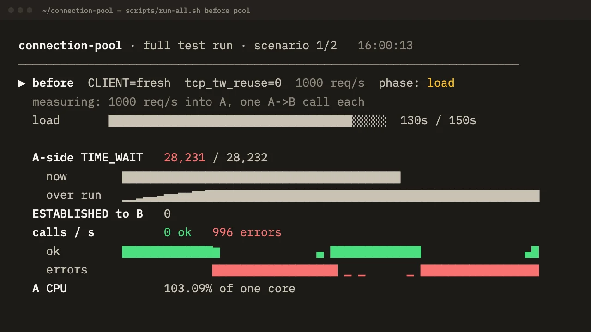

The incident
Service A called service B over localhost once per incoming request, opening a brand-new TCP connection each time and closing it right after. Under sustained load, calls started failing even though nothing looked overloaded.
Why it happens
Every outgoing connection needs its own ephemeral port, and Linux hands out 28,232 of them by default. When A closes a connection, that port isn't free yet. It stays in TIME_WAIT for 60 seconds, so stray packets from the old connection can't leak into a new one.
So A can open about 28,232 ÷ 60 ≈ 470 new connections per second to B, however powerful the machine is. Above that rate for long enough, every port is in TIME_WAIT and connect() fails.
Why localhost didn't protect it
Newer Linux kernels reuse TIME_WAIT ports on localhost after about a second (tcp_tw_reuse=2, now the default). The incident machine ran an older kernel with the full 60-second wait, so the reproduction sets tcp_tw_reuse=0 on a modern kernel to match it.
The reproduction
1,000 req/s→service A (Jetty)
new conn per call→ loopback →service B (Jetty)
keep-alive
Both services run in Docker. A shares B's network namespace, so they talk over real loopback, and a sampler records TIME_WAIT and established sockets every second. One command runs all four scenarios with a live terminal dashboard.

Results
Each scenario ran at 1,000 requests per second for 150 seconds, with the default port range.
| Client | Failed calls | Peak TIME_WAIT | p99 |
|---|---|---|---|
| New connection per request (the incident) | 71,731 | 28,231 | – |
| My connection pool | 0 | 7 | 3.17 ms |
Jetty HttpClient | 0 | 24 | 3.57 ms |
Kernel workaround (tcp_tw_reuse=1) | 0 | 14,045 | 4.94 ms |
Key decisions
Write the pool myself instead of only configuring a library
- problem
- Turning on keep-alive in a library fixes the bug but hides how.
- choice
- About 200 lines of plain Java with no dependencies, compared against Jetty's production client.
- result
- Same outcome as Jetty (0 errors, slightly lower p99 here), and I can explain every part of it.
A health check on every checkout
- problem
- An idle connection may have been closed by the server, or hold leftover bytes from an earlier response.
- choice
- A non-blocking 1-byte read when a connection leaves the pool. It detects both cases without adding latency.
- result
- Dead or dirty connections are discarded before a caller can use them.
Release only after a full read, otherwise discard
- problem
- Returning a half-read connection would let the next caller read someone else's response.
- choice
- Connections go back with
release()only after the response is read completely. Errors, partial reads and server close requests go throughdiscard(). - result
- No caller can ever receive another caller's data.
Mitigation vs. fix
The kernel workaround also stops the errors, but every request still pays for a TCP handshake and teardown. That shows up as higher p90 latency (about 2× the pool's) and more CPU on the server, which has to accept and close 1,000 connections a second. Widening the port range only raises the ceiling. Reusing connections removes the cause.
Honest notes
- The old kernel is emulated with
tcp_tw_reuse=0on a modern kernel, not run on a real Ubuntu 18.04 machine. - One run on one laptop. Compare scenarios within a run. Absolute numbers vary between runs.
- The pool covers what this project needs: HTTP/1.1,
Content-Lengthbodies, one route. In production I'd configure Jetty's client or another keep-alive client.